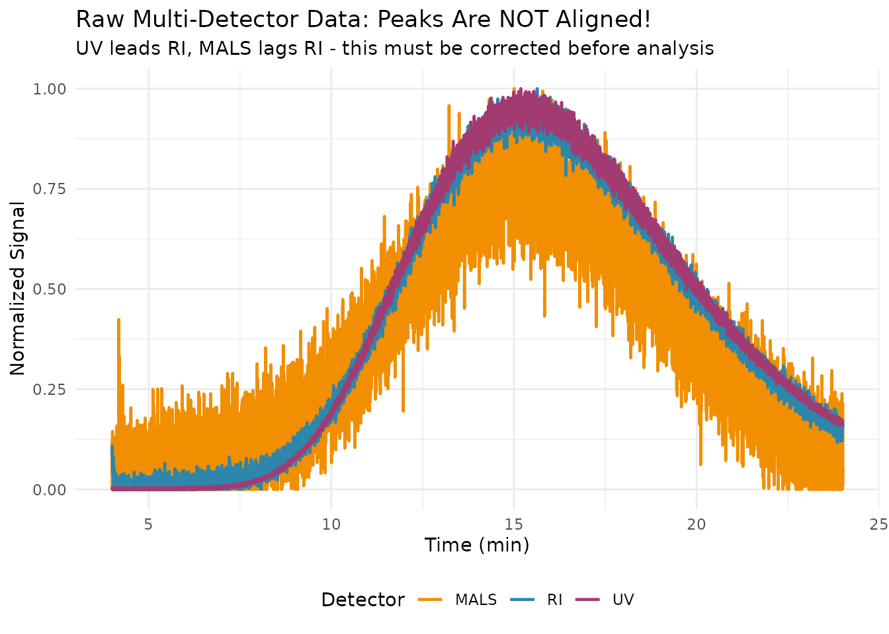
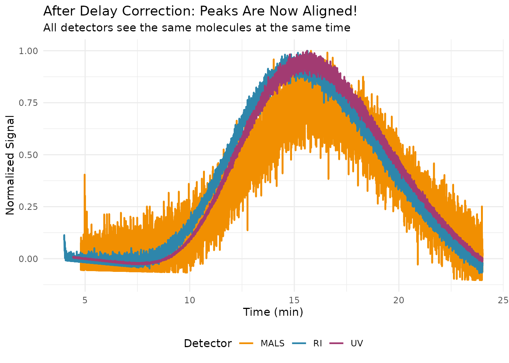
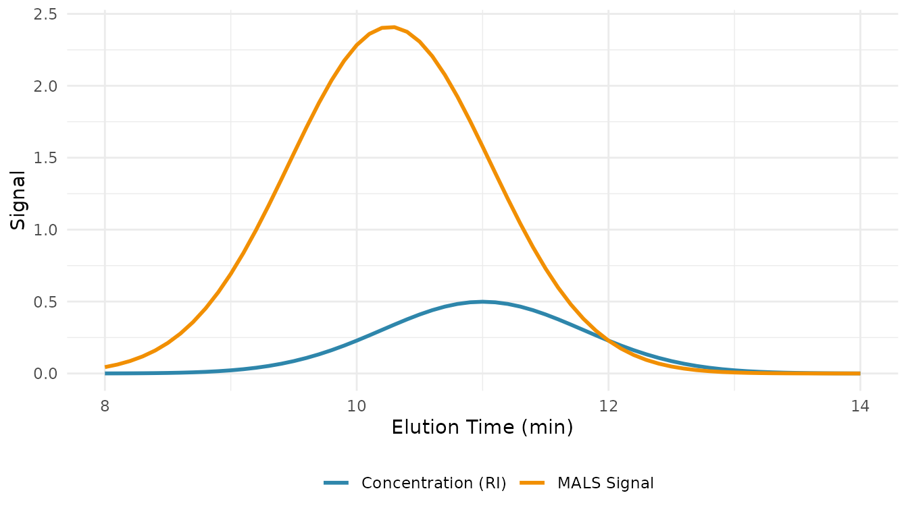
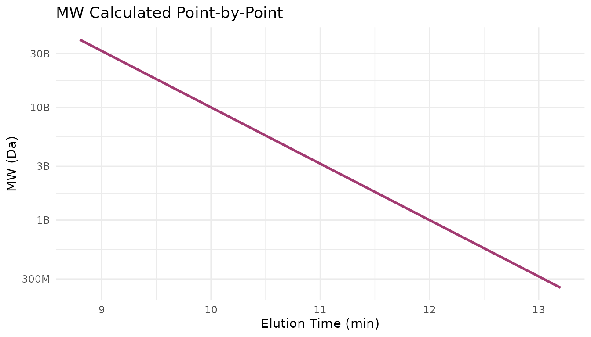
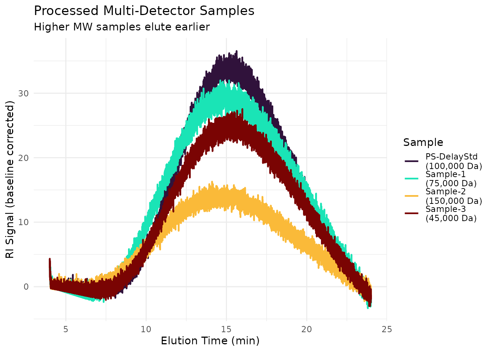

Tutorial: Triple Detection from Raw Data
Source:vignettes/tutorial-triple-detection.Rmd
tutorial-triple-detection.RmdWhat You’ll Learn
This tutorial walks through a complete triple detection SEC workflow from raw instrument data. By the end, you will be able to: 1. Determine inter-detector delays using a narrow standard 2. Align detector signals so peaks match across RI, UV, and MALS 3. Calculate absolute molecular weight from MALS + concentration 4. Validate results against known values
Time to complete: ~30 minutes
Prerequisites
- Completed Getting Started tutorial
- Familiarity with conventional SEC calibration
- Basic understanding of light scattering (optional but helpful)
Why Triple Detection?
Conventional calibration requires standards of the same polymer type as your sample. But what if:
- You’re analyzing an unknown polymer?
- No standards exist for your polymer type?
- You need absolute MW, not relative to standards?
Triple detection solves this by using light scattering (MALS) to measure MW directly. The “triple” refers to:
- RI detector → concentration
- UV detector → chromophore content (optional)
- MALS detector → absolute molecular weight
Setup
library(measure)
#> Loading required package: recipes
#> Loading required package: dplyr
#>
#> Attaching package: 'dplyr'
#> The following objects are masked from 'package:stats':
#>
#> filter, lag
#> The following objects are masked from 'package:base':
#>
#> intersect, setdiff, setequal, union
#>
#> Attaching package: 'recipes'
#> The following object is masked from 'package:stats':
#>
#> step
library(measure.sec)
library(recipes)
library(dplyr)
library(tidyr)
library(ggplot2)The Raw Data Challenge
When you export data from an SEC system with multiple detectors, the signals are NOT aligned. Each detector is at a different position in the flow path, so they see the same molecules at different times.
# Load raw multi-detector data
data(sec_raw_multidetector)
# View samples
sec_raw_multidetector |>
distinct(sample_id, description, mw, dn_dc) |>
print()
#> # A tibble: 4 × 4
#> sample_id description mw dn_dc
#> <chr> <chr> <dbl> <dbl>
#> 1 PS-DelayStd Narrow PS for delay determination 100000 0.185
#> 2 Sample-1 PS sample with UV absorption 75000 0.185
#> 3 Sample-2 PMMA sample (weak UV) 150000 0.085
#> 4 Sample-3 Copolymer sample 45000 0.15Let’s visualize the delay standard to see the misalignment:
# Extract delay standard
delay_std <- sec_raw_multidetector |>
filter(sample_id == "PS-DelayStd")
# Normalize each signal for comparison
delay_plot <- delay_std |>
mutate(
ri_norm = ri_mv / max(ri_mv),
uv_norm = (uv_au * 1000) / max(uv_au * 1000), # Scale AU to visible range
mals_norm = mals_mv / max(mals_mv)
) |>
select(time_min, RI = ri_norm, UV = uv_norm, MALS = mals_norm) |>
pivot_longer(-time_min, names_to = "detector", values_to = "signal")
ggplot(delay_plot, aes(time_min, signal, color = detector)) +
geom_line(linewidth = 0.8) +
scale_color_manual(values = c("RI" = "#2E86AB", "UV" = "#A23B72", "MALS" = "#F18F01")) +
labs(
x = "Time (min)",
y = "Normalized Signal",
title = "Raw Multi-Detector Data: Peaks Are NOT Aligned!",
subtitle = "UV leads RI, MALS lags RI - this must be corrected before analysis",
color = "Detector"
) +
theme_minimal() +
theme(legend.position = "bottom")
Notice how:
- UV peak appears first (UV detector is before RI in flow path)
- RI peak is in the middle (reference detector)
- MALS peak appears last (MALS detector is after RI in flow path)
If we don’t correct this, we’ll match the wrong MW to each concentration point!
Step 1: Determine Inter-Detector Delays
The delay standard (a narrow PS standard) helps us measure the time offset between detectors. We find the peak maximum in each detector and calculate the difference.
# Find peak time for each detector
find_peak_time <- function(time, signal) {
# Simple peak finding: maximum after smoothing
smoothed <- stats::filter(signal, rep(1/5, 5), sides = 2)
smoothed[is.na(smoothed)] <- signal[is.na(smoothed)]
time[which.max(smoothed)]
}
# Calculate peak times
ri_peak <- find_peak_time(delay_std$time_min, delay_std$ri_mv)
uv_peak <- find_peak_time(delay_std$time_min, delay_std$uv_au)
mals_peak <- find_peak_time(delay_std$time_min, delay_std$mals_mv)
cat("Peak retention times:\n")
#> Peak retention times:
cat(" RI: ", round(ri_peak, 3), "min\n")
#> RI: 15.552 min
cat(" UV: ", round(uv_peak, 3), "min\n")
#> UV: 15.132 min
cat(" MALS: ", round(mals_peak, 3), "min\n")
#> MALS: 14.757 min
# Calculate delays relative to RI (the reference)
delay_uv <- ri_peak - uv_peak # Positive = UV needs to shift later
delay_mals <- ri_peak - mals_peak # Negative = MALS needs to shift earlier
cat("\nDelays relative to RI:\n")
#>
#> Delays relative to RI:
cat(" UV delay: ", round(delay_uv, 4), "min (shift UV signal later)\n")
#> UV delay: 0.42 min (shift UV signal later)
cat(" MALS delay: ", round(delay_mals, 4), "min (shift MALS signal earlier)\n")
#> MALS delay: 0.795 min (shift MALS signal earlier)
# Convert to volume (using flow rate of 1.0 mL/min)
flow_rate <- 1.0
cat("\nDelay volumes:\n")
#>
#> Delay volumes:
cat(" UV: ", round(delay_uv * flow_rate, 3), "mL\n")
#> UV: 0.42 mL
cat(" MALS: ", round(delay_mals * flow_rate, 3), "mL\n")
#> MALS: 0.795 mLStep 2: Apply Delay Correction
Now we align all signals to the RI reference. The
step_sec_detector_delay() function handles this:
# Process delay standard with correction
# Note: delay_volumes are in mL; our delays are in minutes, so convert
# Using flow_rate = 1.0 mL/min, time in min = volume in mL
rec_aligned <- recipe(
ri_mv + uv_au + mals_mv + time_min + dn_dc ~ sample_id,
data = delay_std
) |>
update_role(sample_id, new_role = "id") |>
# Convert each detector to measure format
step_measure_input_long(ri_mv, location = vars(time_min), col_name = "ri") |>
step_measure_input_long(uv_au, location = vars(time_min), col_name = "uv") |>
step_measure_input_long(mals_mv, location = vars(time_min), col_name = "mals") |>
# Apply baseline correction
step_sec_baseline(measures = c("ri", "uv", "mals")) |>
# Correct inter-detector delays
# delay_volumes: positive = detector sees sample AFTER reference
step_sec_detector_delay(
reference = "ri",
targets = c("uv", "mals"),
delay_volumes = c(uv = -delay_uv, mals = -delay_mals) # Negate to get correction direction
)
aligned <- prep(rec_aligned) |> bake(new_data = NULL)
# Extract and normalize aligned signals
ri_chrom <- aligned$ri[[1]]
uv_chrom <- aligned$uv[[1]]
mals_chrom <- aligned$mals[[1]]
# Normalize each signal
ri_norm <- ri_chrom$value / max(ri_chrom$value, na.rm = TRUE)
uv_norm <- uv_chrom$value / max(abs(uv_chrom$value), na.rm = TRUE)
mals_norm <- mals_chrom$value / max(mals_chrom$value, na.rm = TRUE)
# Build plot data
aligned_plot <- tibble(
location = rep(ri_chrom$location, 3),
signal = c(ri_norm, uv_norm, mals_norm),
detector = rep(c("RI", "UV", "MALS"), each = length(ri_norm))
)
ggplot(aligned_plot, aes(location, signal, color = detector)) +
geom_line(linewidth = 0.8) +
scale_color_manual(values = c("RI" = "#2E86AB", "UV" = "#A23B72", "MALS" = "#F18F01")) +
labs(
x = "Time (min)",
y = "Normalized Signal",
title = "After Delay Correction: Peaks Are Now Aligned!",
subtitle = "All detectors see the same molecules at the same time",
color = "Detector"
) +
theme_minimal() +
theme(legend.position = "bottom")
#> Warning: Removed 729 rows containing missing values or values outside the scale range
#> (`geom_line()`).
The peaks now align across all detectors.
Step 3: Process Unknown Samples
Let’s analyze the unknown samples using our determined delays:
# Select a sample
sample_1 <- sec_raw_multidetector |>
filter(sample_id == "Sample-1")
# Full triple detection recipe
rec_triple <- recipe(
ri_mv + uv_au + mals_mv + time_min + dn_dc ~ sample_id,
data = sample_1
) |>
update_role(sample_id, new_role = "id") |>
# Convert to measure format
step_measure_input_long(ri_mv, location = vars(time_min), col_name = "ri") |>
step_measure_input_long(uv_au, location = vars(time_min), col_name = "uv") |>
step_measure_input_long(mals_mv, location = vars(time_min), col_name = "mals") |>
# Baseline correction
step_sec_baseline(measures = c("ri", "uv", "mals")) |>
# Delay correction
step_sec_detector_delay(
reference = "ri",
targets = c("uv", "mals"),
delay_volumes = c(uv = -delay_uv, mals = -delay_mals)
) |>
# Process RI for concentration
step_sec_ri(measures = "ri", dn_dc_column = "dn_dc")
result_sample <- prep(rec_triple) |> bake(new_data = NULL)
# View the processed data
result_sample |>
select(sample_id, ri, uv, mals, dn_dc)
#> # A tibble: 1 × 5
#> sample_id ri uv mals dn_dc
#> <chr> <meas> <meas> <meas> <dbl>
#> 1 Sample-1 [12,001 × 2] [12,001 × 2] [12,001 × 2] 0.185Step 4: Calculate Absolute MW from MALS
In a full workflow, you would use step_sec_mals() to
calculate molecular weight from the light scattering signal combined
with concentration. The basic relationship is:
Where: - = excess Rayleigh ratio (from MALS signal) - = optical constant (depends on dn/dc, wavelength) - = concentration (from RI) - = form factor (angular dependence)

Complete Multi-Sample Analysis
Let’s process all samples and compare results to known values:
analyze_sample <- function(sample_data) {
sample_id <- unique(sample_data$sample_id)
known_mw <- unique(sample_data$mw)
rec <- recipe(
ri_mv + uv_au + mals_mv + time_min + dn_dc ~ sample_id,
data = sample_data
) |>
update_role(sample_id, new_role = "id") |>
step_measure_input_long(ri_mv, location = vars(time_min), col_name = "ri") |>
step_measure_input_long(mals_mv, location = vars(time_min), col_name = "mals") |>
step_sec_baseline(measures = c("ri", "mals")) |>
step_sec_detector_delay(
reference = "ri",
targets = "mals",
delay_volumes = c(mals = -delay_mals)
) |>
step_sec_ri(measures = "ri", dn_dc_column = "dn_dc")
result <- prep(rec) |> bake(new_data = NULL)
# Extract peak info for summary
ri_chrom <- result$ri[[1]]
peak_idx <- which.max(ri_chrom$value)
peak_time <- ri_chrom$location[peak_idx]
tibble(
sample_id = sample_id,
known_mw = known_mw,
peak_time = peak_time,
dn_dc = unique(sample_data$dn_dc)
)
}
# Analyze all samples
all_results <- sec_raw_multidetector |>
group_by(sample_id) |>
group_split() |>
purrr::map(analyze_sample) |>
bind_rows()
print(all_results)
#> # A tibble: 4 × 4
#> sample_id known_mw peak_time dn_dc
#> <chr> <dbl> <dbl> <dbl>
#> 1 PS-DelayStd 100000 15.6 0.185
#> 2 Sample-1 75000 14.6 0.185
#> 3 Sample-2 150000 14.1 0.085
#> 4 Sample-3 45000 16.0 0.15Comparison: Overlay All Processed Chromatograms
# Process all samples for plotting
process_for_plot <- function(sample_data) {
sid <- unique(sample_data$sample_id)
known_mw <- unique(sample_data$mw)
rec <- recipe(
ri_mv + time_min + dn_dc ~ sample_id,
data = sample_data
) |>
update_role(sample_id, new_role = "id") |>
step_measure_input_long(ri_mv, location = vars(time_min), col_name = "ri") |>
step_sec_baseline(measures = "ri")
result <- prep(rec) |> bake(new_data = NULL)
chrom <- result$ri[[1]]
tibble(
location = chrom$location,
value = chrom$value,
sample_id = sid,
mw = known_mw,
label = paste0(sid, "\n(", scales::comma(known_mw), " Da)")
)
}
plot_data <- sec_raw_multidetector |>
group_by(sample_id) |>
group_split() |>
purrr::map(process_for_plot) |>
bind_rows()
ggplot(plot_data, aes(location, value, color = label)) +
geom_line(linewidth = 0.8) +
scale_color_viridis_d(option = "turbo") +
labs(
x = "Elution Time (min)",
y = "RI Signal (baseline corrected)",
title = "Processed Multi-Detector Samples",
subtitle = "Higher MW samples elute earlier",
color = "Sample"
) +
theme_minimal() +
theme(legend.position = "right")
When to Use Triple Detection vs Conventional Calibration
| Scenario | Recommended Method |
|---|---|
| Known polymer with available standards | Conventional calibration |
| Unknown polymer type | Triple detection |
| Need absolute MW for regulatory submission | Triple detection |
| Branching analysis | Triple detection (with viscometer) |
| Routine QC of known products | Conventional calibration |
| Copolymers with variable composition | Triple detection |
Troubleshooting Common Issues
| Problem | Possible Cause | Solution |
|---|---|---|
| MALS signal very noisy | Low concentration or small molecules | Increase injection, use LALS/RALS |
| MW values too high | Aggregates or dust in sample | Filter sample, check for aggregates |
| MW values too low | Incorrect dn/dc | Measure dn/dc or use literature value |
| Peaks still misaligned | Wrong delay values | Re-run delay determination |
| Negative MW at edges | Low S/N ratio | Use integration limits to exclude edges |
Summary
You’ve completed a triple detection workflow:
- Identified the delay problem - raw detector signals are not aligned
- Determined delays using a narrow standard
-
Applied corrections with
step_sec_detector_delay() - Processed samples through the complete workflow
Key Takeaways
- Always determine delays with a narrow standard before analyzing unknowns
- RI is typically the reference detector (delay = 0)
- UV leads, MALS lags in most instrument configurations
- Delay values depend on flow rate, tubing length, and flow cell volumes
- Re-check delays if you change any plumbing or flow rates
Next Steps
| Topic | Resource |
|---|---|
| MALS theory and angular analysis | MALS Detection Guide |
| Single-angle alternatives | LALS/RALS Detection |
| Adding viscometer for [η] | Multi-Detector SEC |
| Conventional calibration | Conventional Calibration Tutorial |
Session Info
sessionInfo()
#> R version 4.5.2 (2025-10-31)
#> Platform: x86_64-pc-linux-gnu
#> Running under: Ubuntu 24.04.3 LTS
#>
#> Matrix products: default
#> BLAS: /usr/lib/x86_64-linux-gnu/openblas-pthread/libblas.so.3
#> LAPACK: /usr/lib/x86_64-linux-gnu/openblas-pthread/libopenblasp-r0.3.26.so; LAPACK version 3.12.0
#>
#> locale:
#> [1] LC_CTYPE=C.UTF-8 LC_NUMERIC=C LC_TIME=C.UTF-8
#> [4] LC_COLLATE=C.UTF-8 LC_MONETARY=C.UTF-8 LC_MESSAGES=C.UTF-8
#> [7] LC_PAPER=C.UTF-8 LC_NAME=C LC_ADDRESS=C
#> [10] LC_TELEPHONE=C LC_MEASUREMENT=C.UTF-8 LC_IDENTIFICATION=C
#>
#> time zone: UTC
#> tzcode source: system (glibc)
#>
#> attached base packages:
#> [1] stats graphics grDevices utils datasets methods base
#>
#> other attached packages:
#> [1] ggplot2_4.0.1 tidyr_1.3.2 measure.sec_0.0.0.9000
#> [4] measure_0.0.1.9002 recipes_1.3.1 dplyr_1.1.4
#>
#> loaded via a namespace (and not attached):
#> [1] gtable_0.3.6 xfun_0.56 bslib_0.10.0
#> [4] lattice_0.22-7 vctrs_0.7.1 tools_4.5.2
#> [7] generics_0.1.4 parallel_4.5.2 tibble_3.3.1
#> [10] pkgconfig_2.0.3 Matrix_1.7-4 data.table_1.18.2.1
#> [13] RColorBrewer_1.1-3 S7_0.2.1 desc_1.4.3
#> [16] lifecycle_1.0.5 compiler_4.5.2 farver_2.1.2
#> [19] textshaping_1.0.4 codetools_0.2-20 htmltools_0.5.9
#> [22] class_7.3-23 sass_0.4.10 yaml_2.3.12
#> [25] prodlim_2025.04.28 pillar_1.11.1 pkgdown_2.2.0
#> [28] jquerylib_0.1.4 MASS_7.3-65 cachem_1.1.0
#> [31] gower_1.0.2 rpart_4.1.24 parallelly_1.46.1
#> [34] lava_1.8.2 tidyselect_1.2.1 digest_0.6.39
#> [37] future_1.69.0 purrr_1.2.1 listenv_0.10.0
#> [40] labeling_0.4.3 splines_4.5.2 fastmap_1.2.0
#> [43] grid_4.5.2 cli_3.6.5 magrittr_2.0.4
#> [46] utf8_1.2.6 survival_3.8-3 future.apply_1.20.1
#> [49] withr_3.0.2 scales_1.4.0 lubridate_1.9.4
#> [52] timechange_0.4.0 rmarkdown_2.30 globals_0.18.0
#> [55] nnet_7.3-20 timeDate_4052.112 ragg_1.5.0
#> [58] evaluate_1.0.5 knitr_1.51 hardhat_1.4.2
#> [61] viridisLite_0.4.2 rlang_1.1.7 Rcpp_1.1.1
#> [64] glue_1.8.0 ipred_0.9-15 jsonlite_2.0.0
#> [67] R6_2.6.1 systemfonts_1.3.1 fs_1.6.6